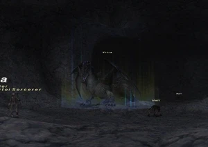
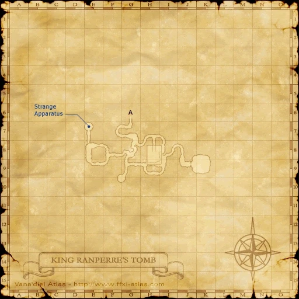

Level 75 reference · Zenith rules
|
Job: Beastmaster Notorious Monster |
 |

|
Zone |
Level |
Drops |
Steal |
Spawns |
Notes | ||||||
|
95 |
1 |
| |||||||||
|
HP = Detects Low HP; M = Detects Magic; Sc = Follows by Scent; T(S) = True-sight; T(H) = True-hearing JA = Detects job abilities; WS = Detects weaponskills; Z(D) = Asleep in Daytime; Z(N) = Asleep at Nighttime | |||||||||||
Notes:


Image source
- Spawns around K-9 on this map every 3-8 days.
- Has the normal Wyrm abilities as well as:
- Summon Undead: They are about the same level as the normal Undead in the room. Two of each type can be out at a time. They inherit hate from Vrtra, so it is difficult to pull them off the tanks. There is no log message when Vrtra summons a pet.
- Charm: Charms the target for a short period of time. Uses the 2-hour animation when Charming someone.
- Sable Breath: Conic AoE elemental attack. The closer you are to the center of the area of effect, the more damage you take. A full damage breath attack can kill nearly anyone in one hit.
- Cyclone Wing: AoE magic damage (~500) and Sleep.
- Absolute Terror: Single-target Terror effect.
- Horrid Roar: Dispels all buffs on the target and resets hate.
- Auto-Regen: Very high Regen rate.
- Dark Magic: Bio III, Dispelga, Blindga, and Sleepga II.
- Killable by 36 level 75 players - a very tough fight. Usually broken up as a main alliance with claim on Vrtra consisting of a tank party, and two other parties. The remaining alliance usually consists of black mages and other melee to take down Vrtra's summons and the adds in the room.
- As Vrtra summons his pets, it is highly likely that the spawn will appear directly on top of Vrtra. This can cause Vrtra to "spin" (similar to Darters on Fafnir and Nidhogg. It is recommended that when fighting Vrtra to walk him slowly around the room to avoid the Spike Flail risk.
Adapted from Eden Wiki: Vrtra · Contributors and history · CC BY-SA 4.0. Revision 44753. Layout, links and optional background text adapted for Zenith.